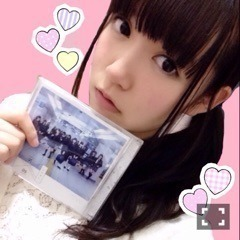
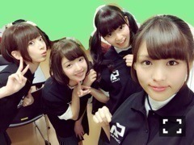
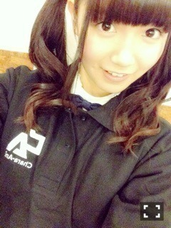
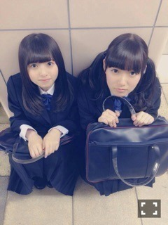
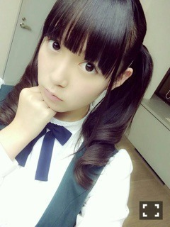
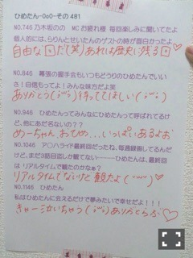
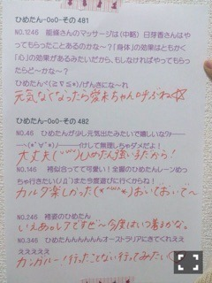

| 2015/01 07 Wed | ひめたん-OoO-その511 |
1stアルバム「透明な色」
発売になりました！
みなさんもうゲットしてくれたかな？

発売日の今日
オリコンデイリーチャート
1位を獲得しました！
みなさんのおかけです
本当にありがとうございます( ˇωˇ )
私たちの想いがつまった
ファーストアルバム
たくさん聴いてくださいね！
特典のほうも盛りだくさんなので
応募待ってるよ～
みなさんは今回の収録曲の中で
何が好きですか？
昨日はお渡し会でした( ﹡ˆoˆ﹡ )
新年一発目のイベント
平日にも関わらずたくさんの方が来てくださって嬉しかった！
ありがとうございました～
私たちの手でお渡しすることって
なかなかないので、ひとつひとつを
ちゃんと届けることができてよかったあ


橋本・和田・かりん・中元
私たちチームキャラアニ♡
このキャンペーンのために
キャラアニさんが
オリジナルユニフォームを作ってくださったの。
どう？似合ってるかな？(´｡･v･｡｀)
短い時間だけどお話もできて
2015年の、そしてアルバムの
良いスタートの日になりました
今年もみなさんにたくさん会えるの
楽しみにしています！

昨日のRの法則観てくれたかな？
前回の日記で告知したはいいけれど
1日フライングしてた......
ごめんね( >_< )
ライブパートでは
「あの日 僕は咄嗟に嘘をついた」を
披露しました！
Rでアンダー曲を披露するのは
今回が初めてだったので
呼んでいただけて感謝です( ˇωˇ )
トークパートにも参加させてもらって
歌詞の街頭インタビューを見たり
R'sの3人についてお話したりと
楽しい30分でした。
トークに参加するのは
バレッタ以来だったのですが
アットホームな雰囲気で迎えてくださって
落ち着きます～＊
観てくれた人は感想待ってます！

前回の乃木どこは表年表裏年表
ちょっとびっくりさせてしまったかな...
もう2年も前の話なのですが
そんな時期もあったなあ～なんて。
でも今はポジションに拘らず
自分の与えられた場所で輝こう！と
前向きに頑張っています（ ˆoˆ ）
少しは成長したんじゃないかにゃ。
そして真夏の優しさにはいつも
頭が上がりません( ˇωˇ )
同じテンションなので
一緒にいて落ち着くし
本当のおねーさんにしたいくらい。
真面目で、努力家で、苦手なことも
努力で補おうとする頑張り屋さんで......
実は尊敬しています！
真夏は乃木坂の愛されキャラだけど
その分真夏もみんなのことを
好きでいてくれてるんだよね♡
ひめたん、真夏のこと
大好きみたい♡
今週末の乃木のの聴いたら
それが感じてもらえると思う！
本人には絶対言わないけどね♡♡
ずっきゅんとびーむの勝負は
負けないよ～(〃ω〃)

のぎ天は観てくれましたか？
研究生さんも加わって
みんなで去年の振り返りをしました
陽菜ちゃんが珍しく、珍しく！
ひめたんのことを
褒めてくれたんだよ～(｀・ω・´)♡
ひなひめコンビが好きな人は
必見ですね！
ええ話盛りだくさんでお送りしてます

 もうちょっとで、センター試験！
もうちょっとで、センター試験！
だから、応援メッセージ頂戴！！！
あと2週間だよね
最後まで自分のペースで。
終わったら楽しいことが
いっぱい待ってるよ( ˇωˇ )
あったかくしてお勉強してください＊
アニメ、よわむしペダルが
おもしろいです(宣伝)
その宣伝のった！！！
みどくん～みどくん～♡
女の子も握手会行ってもいいかなぁ？
もちろんだよ( ﹡ˆoˆ﹡ )
おにゃのこちゃんたちと
ガールズトークするの大好き♡♡
待ってます～＊
アイドル高校生のひめたんは
高校生活で一番思い出に残る行事とか
出来事ってなんだった？
高2の体育祭の日の夜
滝行するために
岩手に行くことになってて
キャリーバッグ引いて会場行ったら
みんなにびっくりされました......
修学旅行も途中で早退したりね～
そんなことばっかりだったよ。
自分は花陽ちゃんが好きなんだけど、
ひめたんは花陽ちゃん好き～？
かよちん好き！
「孤独なHEAVEN」大好きすぎて
ずーっと聴いてたよ～( ﹡ˆoˆ﹡ )
一番はえりちだけどね♡
日芽香ちやんのこと、
日芽香ちやんって呼んでもいいかな？
やっぱりひめたんがいいかな？
なんでも嬉しいよー！
いろんな呼び名があるから
お好きに呼んでくだされ⊂( ˆoˆ )⊃
ひめたんの日記の
コメント欄下２ケタに46を踏んだ方へ
手書きでコメ返するコーナー
＼ ひめたん46 ／


いつもたくさんのコメント
ありがとうございます
乃木どこ、のぎ天、
お渡し会の感想ありがとう
それぞれのお正月のお話も聞けて
みんなの分も楽しみました♡
ひめたんがポジティブ！言ったら
みんなもなんか嬉しそうで
なんだろう、そーゆーのって
伝染するもんなんですかねぇ
嬉しいことは共有しよう！
そーゆ一年にしよう（＾ω＾）
あ、らしくないこと言ってるけど
別に無理してないよ（笑）
(＊´・ω・＊)
コメント(1121)
2015/01/07 23:48